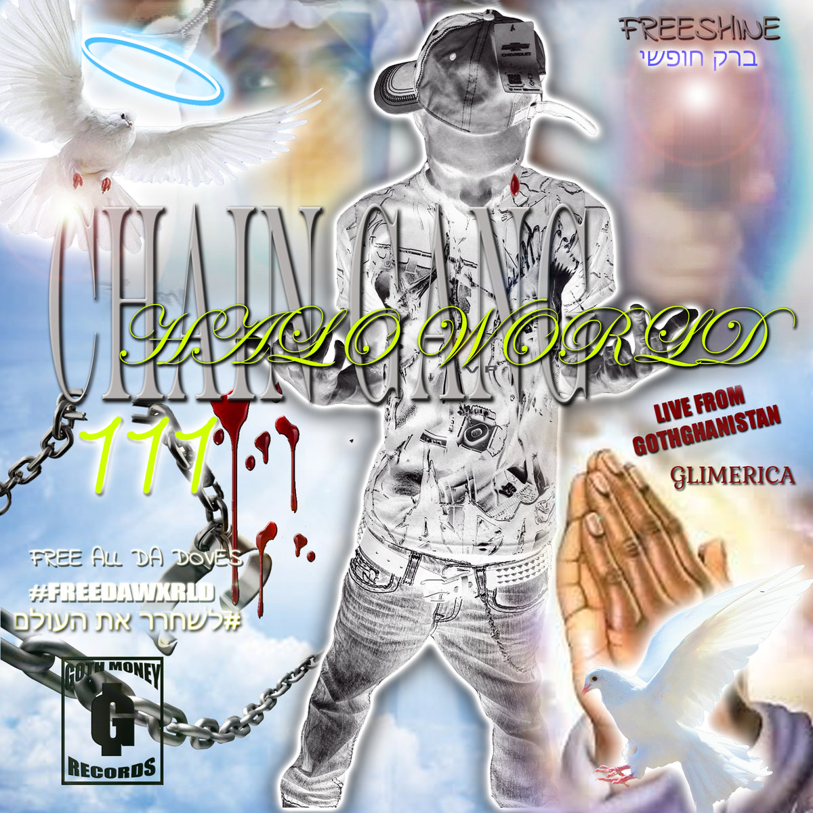
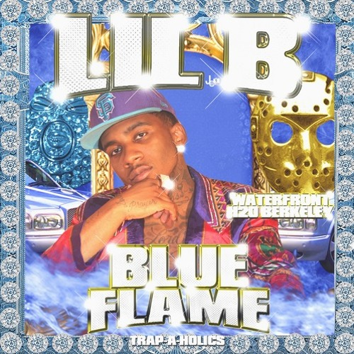
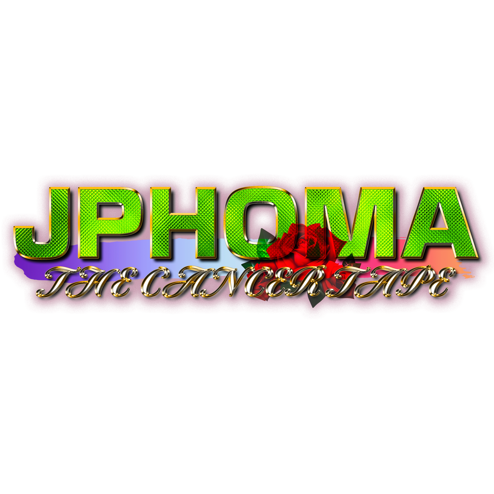
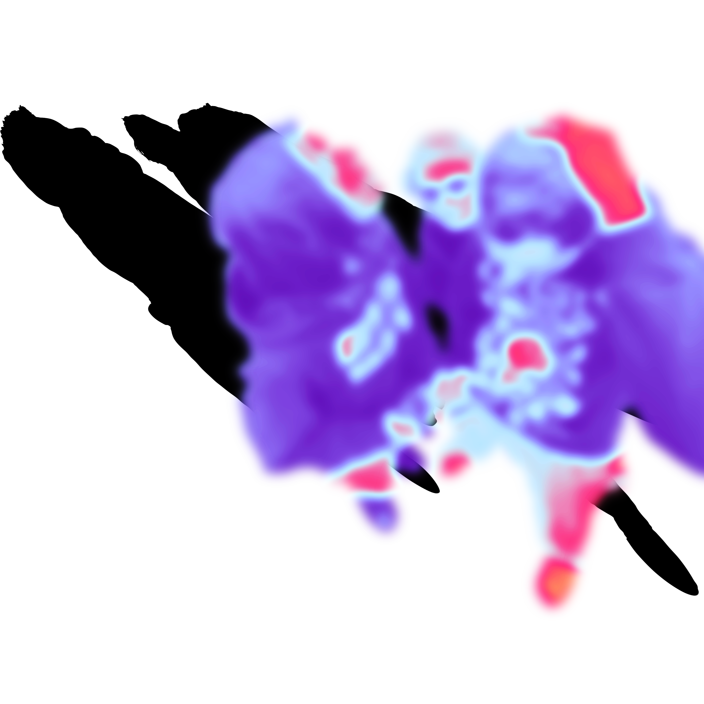

Studying art, its history, and impacts is good and all on its own, but where that learning becomes useful is in application to one’s own practice. As established, album art and the impact of accompanying visual media to music has long been something I’ve found important and interesting. Thankfully, over the past year, I’ve had opportunities to work on album art, both of my own, and for friends and collaborators. Building upon what moved me towards graphic design in high school, I’ve enjoyed working mainly with photos and graphics to do a sort of “digital scrapbooking”. Pulling from collage and hoping that my works stand strongly enough on their own visual merits, there’s always added value for me and people I keep close to know the deeper meanings and context behind photos, colors, etc. that might otherwise just appear as assets. Fitting with the mystique behind how music-related visual art can paint a fuller picture of its creation, bringing my sensibilities to album covers is something I love to do.

Cover for "JPHOMA", 2023
In working with my friend on this cover for his beat tape (“JPHOMA”), it was a project he had put together over the last six months in treatment following a Lymphoma diagnosis. Personal, but still retaining many of the design and music sensibilities that made he and I friends in the first place, we talked over an approach and some inspirations at my dorm before getting started. In deciding to go for something that pulled from bling text and pen and pixel graphics of many Dirty South mixtapes/albums he and I love, everything about not only the project, but its influences, were things I hold dear. Naturally working well with my “scrapbook” style design, Josh gave me a Google Drive folder of (mostly iPhone) images that he had taken over the last six months, plus ones that otherwise had significance to the album’s making. Also pulling from influences and stylings of my own, as well as working with Josh along the way, the final result of the music + cover captures an important period of time in a way both he and I can be proud of.
^ "Chain Gang Halo World", by Black Kray. One visual inspiration
^ "Blue Flame", by Lil B. Another visual (and life) inspiration
Breaking down the elements and assets of the cover I worked in several parts. Actually starting with the main title/bling text, I really wanted to make sure I got that right. Working with Photoshop to give the inside of “JPHOMA” a faux diamond effect, I also created lens flares, and a complimentary metallic subtitle to put the cover’s influences at the forefront.
Once I start building the background, I found an old image from a little vacation with me, Josh, and a third friend posed up in front of a car. Liking its inclusion, but not wanting to draw away from the main title/focus. Josh and I decided to make the photo into more of an abstract blur. I then gave it a harsh shadow to cut through some of the design’s more washed-out portions, and got a cool design element to give depth without shifting focus.
While there are many more elements to the cover I could give the story and significance behind, I wanted to provide a couple examples that might not seem obvious to most of the audience. By showing how even a dreamy, gradient blur can have history and connection, I feel working like this brings me closer to my designs. Seeing them for their visuals, as well as their stories is when art is at its best.